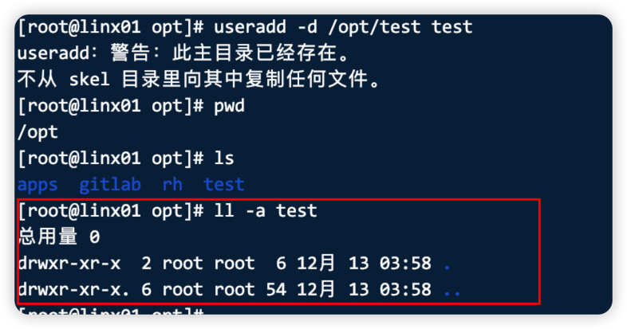
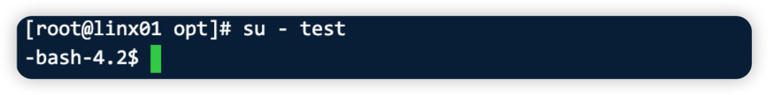
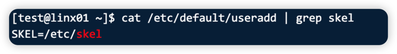

前言
用户管理体系是linux系统中一样很重要的内容，不同的用户分配不同等级的权限可以保障系统的安全，问题发生以后也方便追溯问题的原因。接下来总结一下与用户管理相关的一些比较重要的内容。
用户分类
| 用户分类 | 含义 | uid |
|---|---|---|
| root用户 | 最高权限用户。 | 0 |
| 虚拟用户（傀儡用 户） | 这种用户存在是用于让一些服务正常运行。一些服务运行需要指定 的用户。 | uid是1-999 （非唯一判断标准） |
| 普通用户 | 只对自己家目录拥有权限的用户。 | 1000开始 （CentOS 7. 8. ) C5 c6 (从500开始） |
补充：最小化原则
Linux中，像文件、进程 天生就要有主人，一定要有归属的用户，文件要有属主，进程要有启动用户，目的就是为了安全，不要让别人看一些不该看的东西，也不要让一些进程做你不应该做的。
- 安装软件最小化
- 登录安全最小化（普通用户）
- 进程启动权限最小化。
- 权限最小化
linux中使用命令的时候应该时刻想到最小化原则,比如一个进程需要启动，那么就只给这个用户启动这个进程的权限就好，不要扩大权限。再比如使用find命令 查找文件继而进行删除的时候，find查找的范围要尽可能的精确多使用参数来控制比如文件类型、修改时间、文件大小等等，避免误删这也是最小化原则。
用户相关的配置文件
直接相关文件
| 文件名 | 含义 |
|---|---|
| /etc/passwd | 用户主配置文件，用户的各种属性（UID,GID,家目录，登录SHELL） |
| /etc/shadow | 用户密码文件，存放密码及密码的属性（失效时间，修改密码时间等）。 |
| /etc/group | 组文件，存放用户组及属性。 |
| /etc/gshadow | 用户组的密码文件（废弃） |
创建用户相关的文件
| 文件名 | 含义 |
|---|---|
| /etc/default/useradd | 创建用户命令useradd的配置文件 |
| /etc/skel | 创建用户环境变量原始文件存放地。 |
| /etc/login.defs | 创建用户系统配置对应文件。 |
环境变量丢失问题
对于创建用户的三个文件，我们来看一个常见的问题来深入理解一下。
问题: 使用test用户登录到Linux系统后，发现提示符为如下所示异常情况， 请问如何恢复到正常的Linux命令行提示符情况？
1 | -bash-4.1$ |
解答:
我们来复现一下

我们看到一句重要的提示 “不再向其中复制任何文件”，可以看到家目录内也是空的。

我们先来解决这个问题再来解释

我们从/etc/skel/目录下 将bash的几个文件拷贝拷贝到家目录就好了，这几个文件是控制用户环境变量的，如果没有这几个文件 ，家目录是有问题的 就会出现-bash-4.2$的问题。那至于为什么要从/etc/skel中拷贝也是 linux事先在配置文件中规定好的,查看useradd文件

用户管理命令
这些命令都比较简单，就不再进行演示了，感兴趣的可以自己操作一下。
增加用户
| useradd 选项 | 含义 | |
|---|---|---|
| 基本用法: useradd 用户名 | ||
| -s | 添加用户的时候指定用户的命令解释器，如果不指定默认是/bin/bash. | |
| -M | 添加的用户的时候不创建家目录。（一般与-sM搭配使用) | |
| -u | 添加用户的时候指定uid。 | |
| -g | 主要组（原生组） 替换默认创建的组。 | |
| -G | 附加组（额外组）添加用户的时候，让用户属于多个组 |
删除用户
| userdel 删除用户 宣传 | |
|---|---|
| -r | 删除用户及用户相关数据（家目录，邮箱） 极其危险。 |
⚠️工作中一般不会使用这种操作，最简单的做法就是在passwd文件中注释此用户即可。
修改用户
- usermod 修改已存在的用户的信息，useradd添加用户时候设置的信息，usermod都可以改。
- uesrmod的选项与useradd 类似。
查看用户信息
查看用户基本信息
- whoami 显示当前用户的名字。
- id 查看当前或指定用户的信息（uid,gid,用户组信息）
查看用户登录情况
- w
- last 查看用户的登录情况。
- lastlog 查看所有用户最近1次的登录情况。

...
...
00:00
00:00
This is copyright.